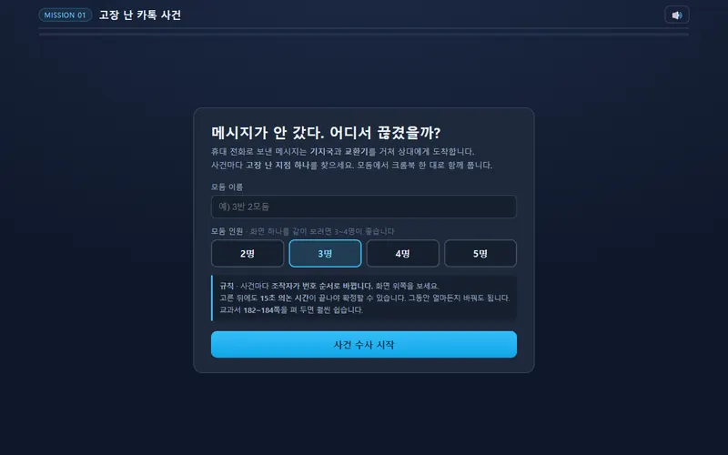
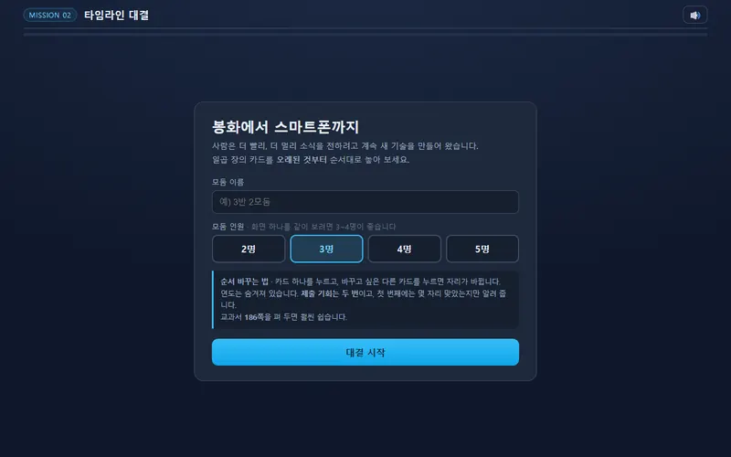
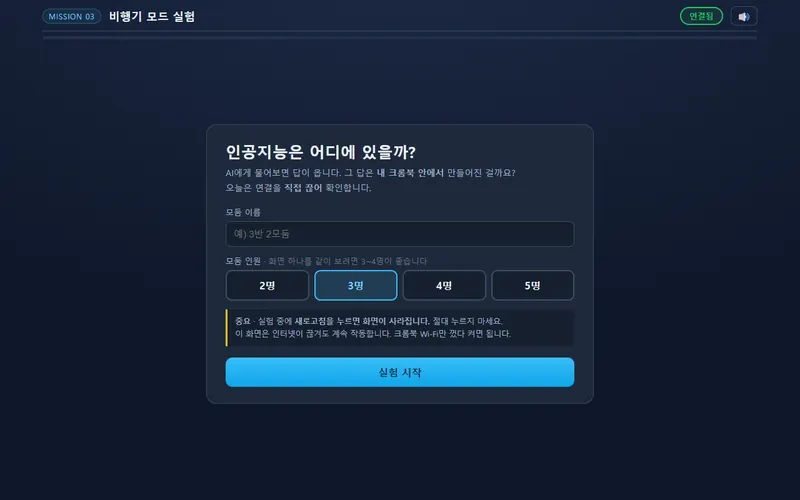
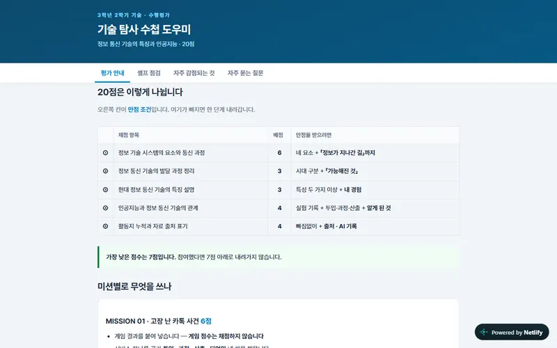
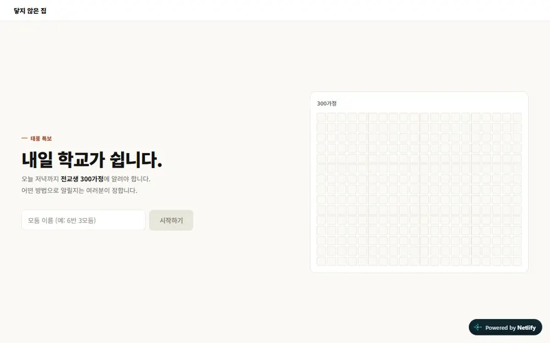
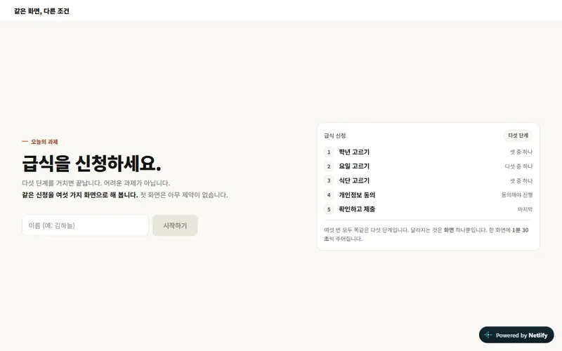
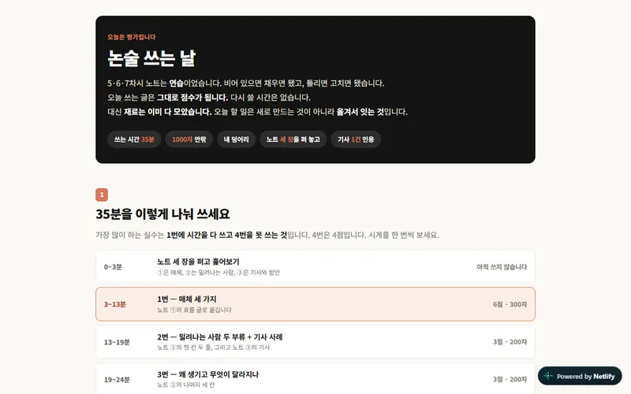
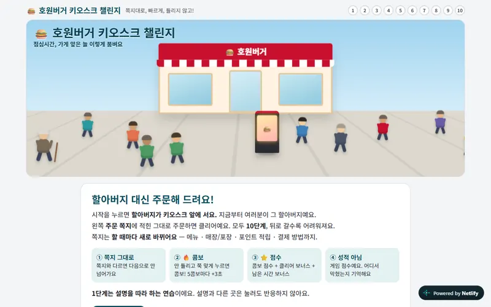
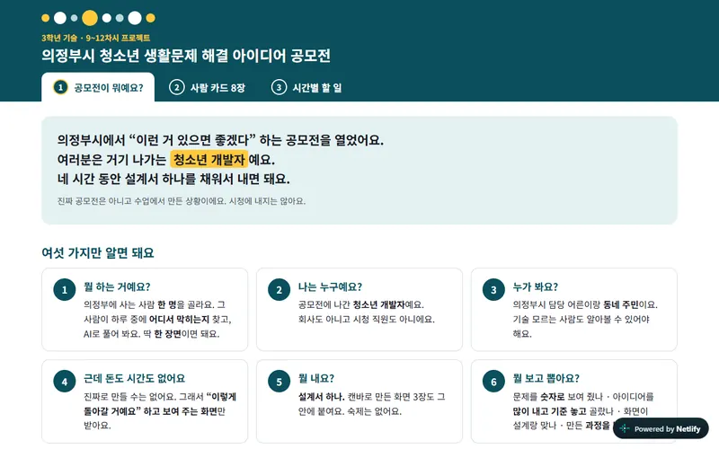
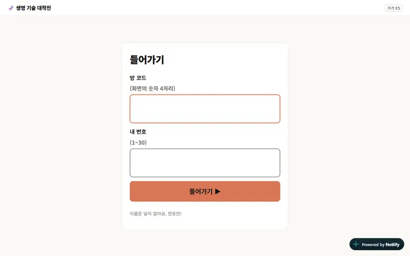

1차시
고장 난 카톡 사건
카톡이 왜 안 갔을까? 모둠이 사건을 추리하며 메시지가 지나가는 길에서 고장 난 곳을 찾아요. 투입 · 과정 · 산출 · 되먹임을 익혀요.
- [9기가04-15]
- 수첩 MISSION 01
호원중학교 3학년 기술 · 2026학년도 2학기
이번 학기 기술 시간에 쓴 웹 사이트 열 개를 수업 순서대로 모았어요. 「바로 가기」를 누르면 새 창에서 열립니다. 다시 해 보고 싶은 활동이 있으면 언제든 들어가 보세요.
게임으로 먼저 겪고, 기술 탐사 수첩에 정리했어요. 게임 점수는 성적에 들어가지 않아요.

1차시
카톡이 왜 안 갔을까? 모둠이 사건을 추리하며 메시지가 지나가는 길에서 고장 난 곳을 찾아요. 투입 · 과정 · 산출 · 되먹임을 익혀요.

2차시
봉화에서 스마트폰까지! 연도가 숨겨진 정보 통신 기술 카드 일곱 장을 오래된 것부터 순서대로 놓는 모둠 대결이에요.

3차시
크롬북 Wi-Fi를 직접 껐다 켜 보며, 인공지능이 내 기기 안에 있는지 멀리 있는 서버에 있는지 확인하는 실험이에요.

1~4차시 · 수행평가 안내
포트폴리오 평가 안내와 셀프 점검이 있어요. 질문에 답하면 예상 점수가 바로 나오고, 자주 감점되는 곳과 자주 묻는 질문도 볼 수 있어요.
통신 매체가 누구에게 닿고 누구를 놓치는지 직접 겪어 보고, 논술로 썼어요.

5차시
태풍 때문에 내일 학교가 쉰다! 오늘 저녁까지 300가정에 어떻게 알릴까? 통신 매체를 「누구에게 닿고 누구를 놓치나」로 비교해요.

6차시
똑같은 급식 신청을 여섯 가지 화면으로 해 봐요. 못 한 건 그 사람이 아니라 그 화면 때문이라는 걸 직접 겪어 봐요.

8차시 · 논술 평가 날
논술 평가 날 35분을 어떻게 나눠 쓸지, 어디서 점수가 갈리는지 알려 주는 안내 화면이에요. 문제와 답안은 들어 있지 않아요.
「어르신들은 키오스크가 어렵대요」를 듣는 대신, 한 번 직접 막혀 봤어요.

교양 8차시
할아버지가 되어 주문 쪽지대로 키오스크 10단계에 도전해요. 광고 · 작은 글씨 · 영어 화면 같은 장벽을 겪고, 마지막엔 키오스크를 고쳐서 다시 해 봐요.
청소년 개발자가 되어 우리 동네 의정부의 생활 문제를 AI로 푸는 장면을 설계했어요.

9~12차시
의정부에 사는 사람 한 명을 골라, 그 사람이 어디서 막히는지 찾고 AI로 푸는 한 장면을 설계해요. 사람 카드와 차시별 할 일이 있어요.
선생님 큰 화면과 내 크롬북으로 짧은 팀 대결을 이어서 했어요.

13~16차시 · 실시간 팀 대결
화면에 나온 방 코드 네 자리와 내 번호만 넣으면 들어가요. 이름은 넣지 않아요. 게임 일곱 개를 차시마다 두세 판씩 했어요.